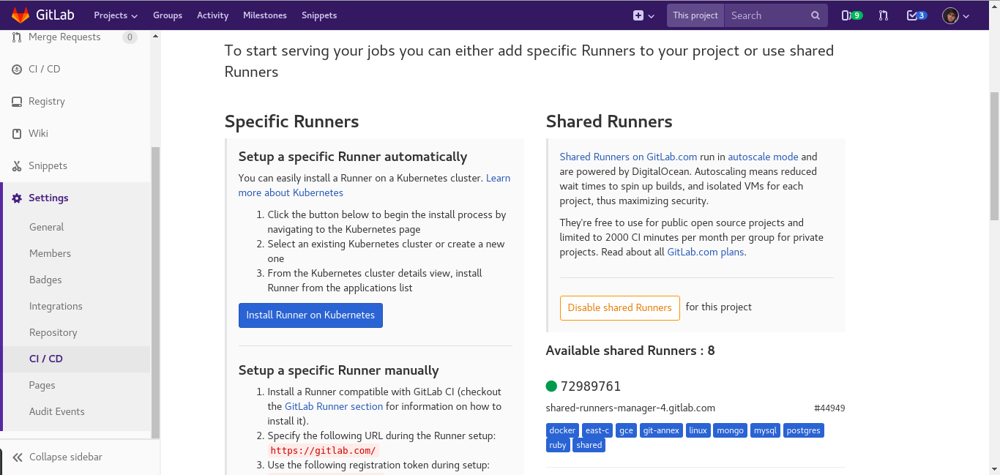
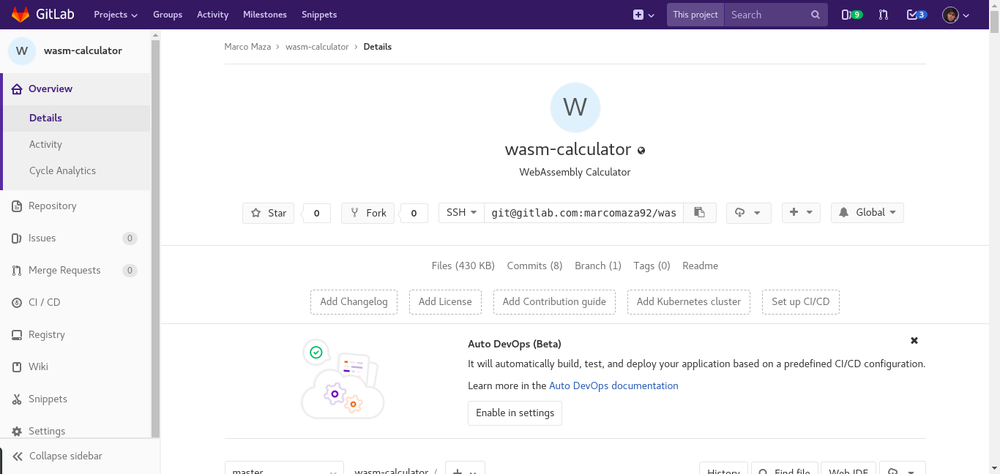
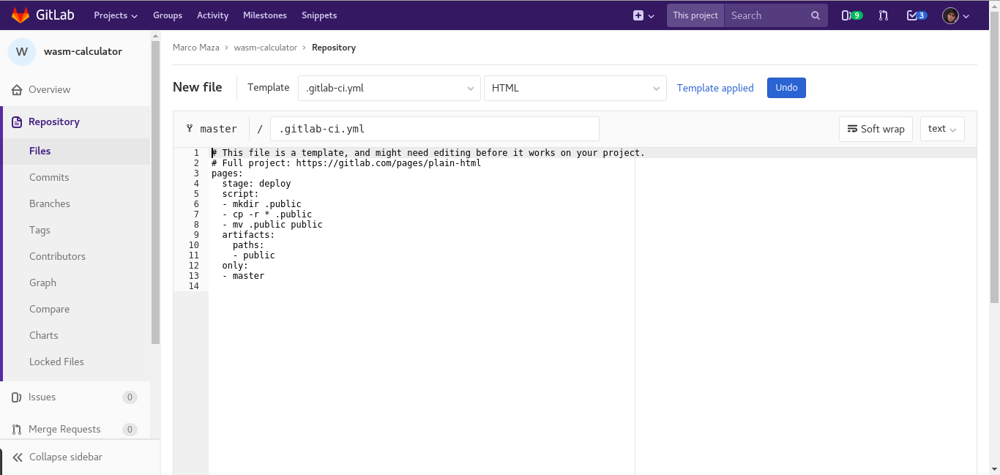
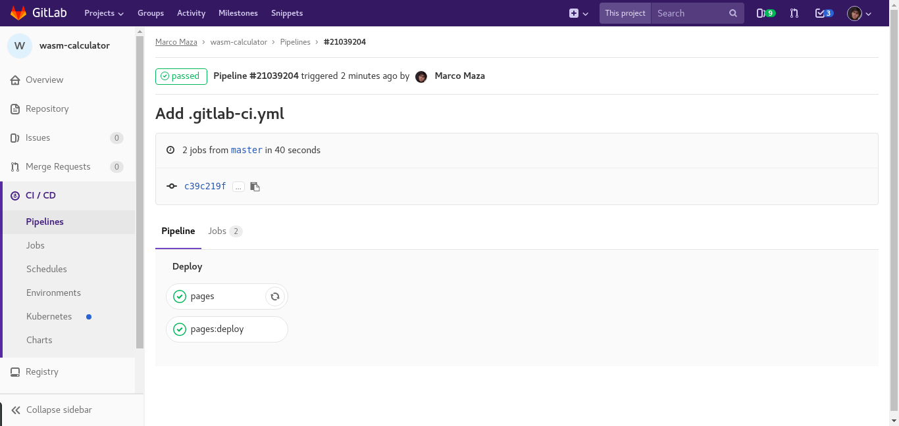
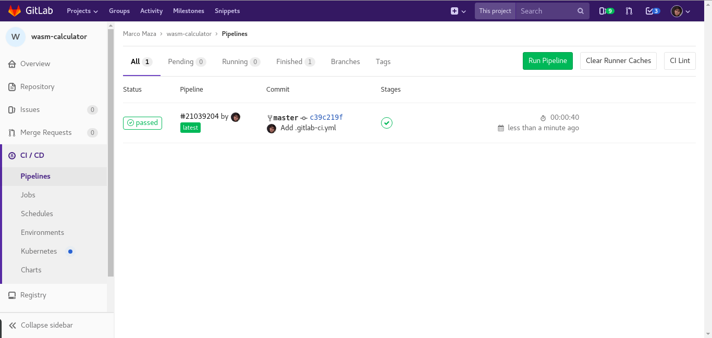
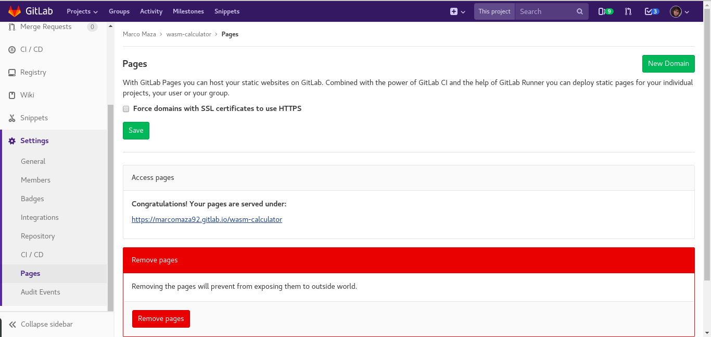
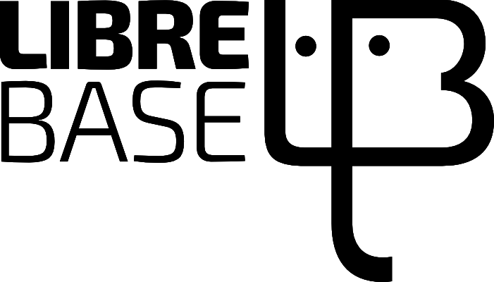
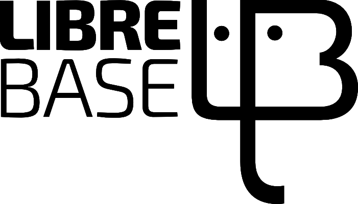

El ciclo del desarrollo web:
Liberado
Preámbulo
¿Quién soy?
Lo común: Soy Marco, WebDev hace muchos años. Geek fan.
La presentación en ingles: I'm Marco, WebDev for 4 years. I like playing futbol (such a lie)
La verdad: Soy Marco, una persona normal, como vos que estás ahí
Contacto

E-mail: marcoagustinmaza@gmail.com
GitLab: marcomaza92
Antes de empezar...

Temario
Parte 0
- Intro
- Objetivos
Parte I
- Versionado con Git
Parte II
- Wireframes con Pencil
- Mockups con GIMP e Inkscape
- Sistema de diseño con HTML y SCSS
Parte III
- Maquetado con HTML, SCSS y Bootstrap
- DOM con JS
- Miscelaneas
Parte IV
- Lanzamiento con GitLab Pages
Bonus

Intro
¿Qué vamos a hacer?
Vamos a mostrar que es posible crear un proyecto de calidad y de manera profesional, ya sea en equipo o individualmente, con herramientas netamente libres y de código abierto
Si, aún no me creen, lo sé...

Objetivos
¿Qué vamos a aprender?
- Sistema de versionado
- Experiencia e Interfaz de Usuario (UX/UI)
- Diseño web
- Desarrollo web
- Lanzamiento y almacenamiento de un sitio web
¿Qué NO vamos a aprender?
- 1 de los 923749247 Frameworks de JS
- Aplicaciones o sistemas web
- Lenguajes de back-end
- Servidores
- Ruby!
Versionado con Git
¿Qué es Git?
Git es un sistema distribuido de control de versiones libre y gratuito
Un sistema que está compartido en muchos lugares y sirve para organizar los miles de archivos con diferentes versiones que tenemos
¿Donde uso Git?
En la práctica podemos usar Git para casi cualquier cosa
- Proyectos de programación
- Proyectos de no programación
- Libros que escribamos
- El plan del gimnasio
- La lista del super
Clientes de Git
Hay muchos clientes para usar Git, entre ellos, GitLab, GitHub, BitBucket. Nosotros vamos a usar GitLab porque es el más libre (además tiene repositorios públicos y privados)

Flujo de trabajo con Git
En Git tenemos un flujo de trabajo bastante sencillo de aprender:
- Repositorio Local (Working copy)
- Área de Preparación (Staging area)
- Repositorio Remoto (Remote)
Comandos en Git
Podemos usar Git desde nuestra PC con alguna interfaz amigable o con la terminal. Yo siempre recomiendo la terminal porque podemos entender más lo que estamos haciendo.
Comandos en Git
Los comandos que conforman el cíclo básico de Git son:
git pullgit statusgit add .git commit -av -m "Tu mensaje"git pushDemostración
Wireframes con Pencil
¿Qué es Pencil?
Es una herramienta de prototipado y creación de wireframes libre y de código abierto
¿Dónde uso Pencil?
En este caso, lo utilizaremos para crear wireframes para poder entender y mostrar de manera clara y concisa el funcionamiento del sitio web
¿Wire...qué?. Wireframe
El wireframe es una guía visual que representa el esqueleto o estructura visual de un sitio web y como funcionan todos los componentes que la forma.
El wireframe carece de estilo tipográfico, color o aplicaciones y/o ediciones gráficas ya que se centra en el funcionamiento o UX (Experiencia de Usuario) del sitio web.
Flujo de trabajo en Pencil
En Pencil, gracias a su simplicidad, podemos resumir las tareas en las siguientes:
- Diseñamos el wireframe
- Guardamos en un archivo .epz o exportamos a otros formatos
- Compartimos el archivo con los demás
Demostración
Mockups con GIMP e Inkscape
¿Qué es GIMP?
Es una herramienta de edición de imágenes libre y de código abierto. Sus siglas vienen de GNU Image Manipulation Program
¿Qué es Inkscape?
Es una herramienta de edición profesional de gráficos vectoriales libre y de código abierto
¿Dónde uso estas herramientas?
Usualmente estas herramientas se usan para diseñar y trabajar con edición de elementos gráficos en general.
En el caso del desarrollo web, esto forma parte del diseño web. Con estas herramientas convertimos los wireframes en mockups o bocetos
¿Qué es un Mockup?
El mockup (o boceto), al igual que el wireframe, es un guía visual pero que si contiene estilos tipográficos, color y detalles más pulidos de la UI (Interfaz de usuario).
Demostración
Sistema de diseño con HTML y SCSS
¿Qué es un sistema de diseño?
Cómo estamos viendo, todo lo anterior se enfoca en el diseño web. El sistema de diseño es el paso de transición entre el diseño web y el desarrollo web.
El sistema de diseño es un acuerdo común entre diseñadores y desarrolladores para lograr una igualdad entre los diseños presentados y cómo se ven estos en código.
¿Dónde uso el sistema de diseño?
Lo vamos a utilizar como medio de comunicación entre los diseñadores y los desarrolladores para evitar supuestos, asumir escenarios y tener en claro las mismas lineas de UI.
¿Cómo hago uno?
No es una tarea sencilla y requiere de muchos acuerdos entre las partes y una inversión de tiempo grande para pulir al máximo todos los detalles (recuerden que es un medio de comunicación).
Pero una vez hecho, el flujo de trabajo se vuelve exageradamente sencillo y fácil de implementar.
¿Por qué usar código para un sistema de diseño?
- Le damos los estilos al desarrollador directamente en código
- Aumentamos el conocimiento de los diseñadores respecto al código que usarán los desarrolladores
¿Por qué usar código para un sistema de diseño?
- Los diseñadores conocerán las limitaciones que puede tener el código a la hora de realizar un diseño
- Los desarrolladores trabajarán codo a codo con los diseñadores brindando otra perspectiva más técnica
Demostración
¿Y?
¿Cómo van hasta ahora?
¿Seguimos?
Maquetado con HTML, SCSS y Bootstrap
¿Qué es el maquetado?
El maquetado es la codificación de la estructura o esqueleto del sitio web que se ha diseñado.
HTML, SCSS y Bootstrap
¿KHE?
Bueno, vamos de a poco...
HTML
HTML es lenguaje de marcado que se utiliza para codificar la estructura de un sitio web.
HTML NO ES UN LENGUAJE DE PROGRAMACIÓN (y ni se les ocurra parsearlo).
CSS
CSS es un lenguaje de estilos que se utiliza para codificar los estilos de un sitio web.
CSS NO ES UN LENGUAJE DE PROGRAMACIÓN (y ni se les ocurra usar estilos inline).
SASS
SASS es un lenguaje de script que es traducido a CSS.
Esta programado en Ruby y es libre y de código abierto.
Sintaxis de SASS
Existen dos sintaxis de Sass:
- Sintaxis Indentada: Original de SASS (SASS Syntax)
- Sintaxis de bloque: Nueva sintaxis (SCSS Syntax)
Nosotros vamos a usar la última por varias razones.
SCSS
SCSS significa Sassy CSS y vamos a usar esta sintaxis por lo siguiente:
- Es la más compatible con CSS tradicional
- Es más verborragica y fácil de interpretar
- Nos permite adentrarnos a lenguajes de programación con más facilidad
Bootstrap
Es una librería front-end utilizada en gran parte de los sitios web actualmente.
Una librería es un conjunto de scripts, clases, snippets, componentes, etc., que pueden ser utilizados en proyectos mediante el enlazamiento de dicha librería.
Bootstrap
De bootstrap solamente vamos a utilizar las media queries.
Las media queries son módulos (o instrucciones) de CSS que permiten adaptar la representación del contenido a las características del dispositivo utilizado para navegar por el sitio.
¿Dónde uso todo esto?
En este caso, vamos a utilizar HTML, SCSS y las media queries de Bootstrap para maquetar nuestro diseño web.
Es decir, pasamos a código el diseño web de nuestro proyecto.
Demostración
DOM con JS
¿Qué es el DOM?
El DOM es una API (Interfaz de Programación de Aplicaciones) para documentos HTML (y XML). Proporciona una representación estructual del documento que permite su modificación visual y de contenido. Esta estructura puede ser modificada por los lenguajes de script o de programación (por ejemplo, JavaScript).
Una API es, básicamente, un conjunto de métodos de comunicación entre varias partes del proyecto o sistema.
¿Qué es JavaScript?
Es un lenguaje de script (y también de programación) que sirvió inicialmente para la manipulación del DOM de los sitios web.
En la actualidad JS es utilizado en ambas partes del stack y su popularidad ha aumentado notablemente.
¿Dónde uso JS?
En este caso utilizamos JS para manejar dinámicamente el maquetado que hicimos anteriormente mediante la maravillosa herramienta del DOM.
Demostración
Miscelaneas
¿Qué hay acá?
Acá vamos a ver las cosas que, si bien son importantes, son opcionales o tienen más de una forma de hacerse dependiendo el proyecto.
SEO
SEO signifca Search Engine Optimization y sirve para mejorar el posicionamiento (o visibilidad) de un sitio web en los resultados orgánicos de los diferentes búscadores.
Podemos dividir el SEO en dos grandes tipos:
- On-Site
- Off-Site
SEO On-Site
El SEO On-Site es el que engloba las siguientes prácticas:
- Uso de palabras claves (Keywords) en las etiquetas <meta>
- Uso del mobile-first como patrón de diseño
- Uso de formatos de URLs (enlaces) amigables
SEO Off-Site
El SEO Off-Site es el que engloba las siguientes prácticas:
- Número y calidad de las URLs (enlaces) externos
- Presencia en redes sociales, medios de difusión, etc.
- Resultados en los motores de búsquedas
¿Donde uso el SEO?
En este caso, usaremos el SEO en el mismo código HTML que hicimos anteriormente.
Humans.txt
Humans.txt es un archivo de texto plano en el cual figura la información de los autores y/o colaboradores del sitio web.
Es un archivo opcional pero siempre es bueno tenerlo para mejorar la visibilidad y humanidad del sitio web.
¿Dónde uso Humans.txt?
Simple. Se coloca en la raíz del proyecto junto con los demás archivos.
.editorconfig
.editorconfig es un archivo de formato que ayuda a mantener reglas estándares a través del proyecto y entre sus colaboradores.
¿Dónde uso .editorconfig?
Este archivo va al mismo nivel que el archivo humans.txt y, al igual que este último, no es intrusivo de ningua manera.
Demostración
Lanzamiento con GitLab Pages
Introducción
Recuendan que vimos Git y dijimos que íbamos a usar GitLab porque es lo más libre que hay?. Bueno, ahora con ese mismo GitLab vamos a subir nuestro sitio web a internet.
¿Qué es GitLab Pages?
GitLab Pages es una herramienta que nos permite convertir nuestro repositorio en un hosting para sitios web estáticos
¿Dónde uso GitLab Pages?
Cuando hacemos un sitio, lo último (usualmente) que hacemos es hostearlo para que los demás puedan verlo en linea.
¿Cómo lo hago?
Primero debemos chequear que determinadas opciones estén activadas (al 2018 ya vienen activadas por defecto)
Luego debemos crear un archivo .gitlab-ci.yml y ubicarlo en la raiz de nuestro proyecto
Por último nos dirigimos a nuestras opciones de página, buscamos el enlace, ingresamos y voilà!.
Paso 1 - Configuraciones
En el menú de la izquierda vamos a ir a Setting -> CI / CD -> Runners Settings -> Expand
Buscamos Shared Runners (a la derecha) y nos fijamos si está activado (debería estarlo).
Paso 1 - Configuraciones
Paso 2 - Creamos el .gitlab-ci.yml
En el menu de la izquierda vamos a Overview y cuando se cargue la pantalla buscamos (a la derecha) un butón que dice Setup CI/CD
Paso 2 - Creamos el .gitlab-ci.yml
Paso 2 - Creamos el .gitlab-ci.yml
A la izquierda de la pantalla vamos un menu desplegable que dice From template, hacemos click y escribimos "HTML" y nos va a generar el contenido automágicamente.
Bajamos un poco y hacemos click en el botón verde para guardar los cambios.
Paso 2 - Creamos el .gitlab-ci.yml
Paso 2 - Creamos el .gitlab-ci.yml
En el menú de la izquierda vamos a CI/CD -> Pipelines y cuando se cargue la pantalla buscamos un recuadro. Puede ser azul y decir Executing o verde y decir Passed.
Al margen de lo que diga, hacemos click ahí y vamos a ver el estado de nuestro proceso que lanza el sitio web.
Paso 2 - Creamos el .gitlab-ci.yml
Paso 2 - Creamos el .gitlab-ci.yml
Vamos refrescando el sitio y cuando el proceso este como passed procedemos al siguiente paso
Paso 2 - Creamos el .gitlab-ci.yml
Paso 3 - Buscamos el enlace
En el menú de la izquierda vamos a Settings -> Pages y buscamos un lugar que diga Access Pages.
Ahí se encontrará nuestro link. Si clickeamos, nos debería llevar a nuestro sitio web que desarrollamos localmente.
Paso 3 - Buscamos el enlace
Demostración
¡Bonus!
WebAssembly
¿Qué es WebAssembly?
Básicamente, WebAssembly es un comunicador entre lenguajes como C/C++ y la web.
Es decir, podemos correr código C/C++ en un sitio o aplicación web
Y eso está increíble!
Alcances y Estado del arte
Hoy por hoy, WASM está en una etapa de maduración y prueba y error constante. Mejorando día a día.
En lo personal, una aplicación directa sería la traducción de ese código viejo (C/C++) a un ambiente web.
Demostración
¿Preguntas?
Agradecimientos
 


Gracias!

Contacto
E-mail: marcoagustinmaza@gmail.com
GitLab: marcomaza92